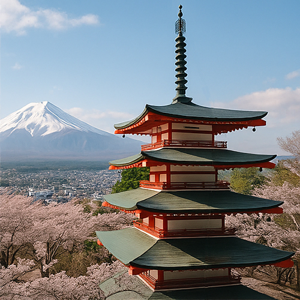

Parque Arakurayama Sengen – Vista icónica del Monte Fuji y la Pagoda Chureito

El Parque Arakurayama Sengen (新倉山浅間公園) es un hermoso parque público ubicado en la ciudad de Fujiyoshida, en la prefectura de Yamanashi, famoso por sus impresionantes vistas del Monte Fuji enmarcadas por la icónica pagoda de cinco pisos Chureito. Este mirador panorámico se ha convertido en uno de los lugares más fotografiados de Japón, especialmente durante la floración de los cerezos en primavera y el colorido otoño.
Importancia histórica y cultural
El punto central del parque, la Pagoda Chureito, fue construida en 1963 como monumento conmemorativo de la paz en honor a quienes fallecieron durante la Segunda Guerra Mundial. Situada en la ladera de la montaña, la pagoda ofrece una atmósfera serena que combina la arquitectura tradicional japonesa con la belleza natural. El nombre “Sengen” hace referencia a la diosa sintoísta Konohanasakuya-hime, deidad del Monte Fuji, venerada en el santuario Sengen de Fujiyoshida.
Belleza escénica incomparable y estaciones espectaculares
Los visitantes deben subir aproximadamente 400 escalones para llegar a la pagoda y al mirador, donde son recompensados con una vista panorámica en la que la pagoda roja contrasta dramáticamente con la cima nevada del Monte Fuji. En primavera, los cerezos en flor enmarcan la escena con tonos rosados vibrantes, mientras que en otoño la ladera se tiñe de rojos y dorados intensos, atrayendo a fotógrafos y viajeros de todo el mundo.
Experiencia del visitante y accesibilidad
El Parque Arakurayama Sengen cuenta con senderos bien mantenidos, plataformas panorámicas y tranquilas áreas para picnic. El parque está abierto todo el año, siendo las mejores épocas para visitarlo desde finales de marzo hasta principios de abril para ver los cerezos en flor y a mediados de noviembre para disfrutar del follaje otoñal. Se puede acceder en taxi o caminando (aproximadamente 30 minutos) desde la estación de Fujiyoshida.
¿Por qué visitar el Parque Arakurayama Sengen?
Combinando historia, cultura y una de las vistas más emblemáticas de Japón, el Parque Arakurayama Sengen ofrece una experiencia verdaderamente inolvidable. Es un destino perfecto para fotógrafos, amantes de la naturaleza y quienes desean sumergirse en el patrimonio natural y espiritual de Japón.
Información para visitantes
- 🌸 Dirección: 4992-1 Arakura, Fujiyoshida, Prefectura de Yamanashi, Japón
- 🌸 Horario: Abierto las 24 horas (se recomienda visitar durante el día)
- 🌸 Entrada: Gratuita
- 🌸 Acceso: 30 minutos a pie o corto trayecto en taxi desde la estación de Fujiyoshida
Etiquetas: Parque Arakurayama Sengen, Pagoda Chureito, vista Monte Fuji, atracciones Fujiyoshida, floración de los cerezos Japón, otoño Japón, parques japoneses, memorial de paz
¿Está planeando una visita al Parque Arakurayama Sengen?
Para vivir una experiencia verdaderamente inmersiva y significativa, le recomendamos reservar un guía local certificado de nuestro equipo. Todos nuestros guías son profesionales oficialmente reconocidos por el gobierno japonés y ofrecen visitas personalizadas según sus intereses. Contacte con el guía elegido con antelación para confirmar la disponibilidad y recibir asistencia experta para su viaje.